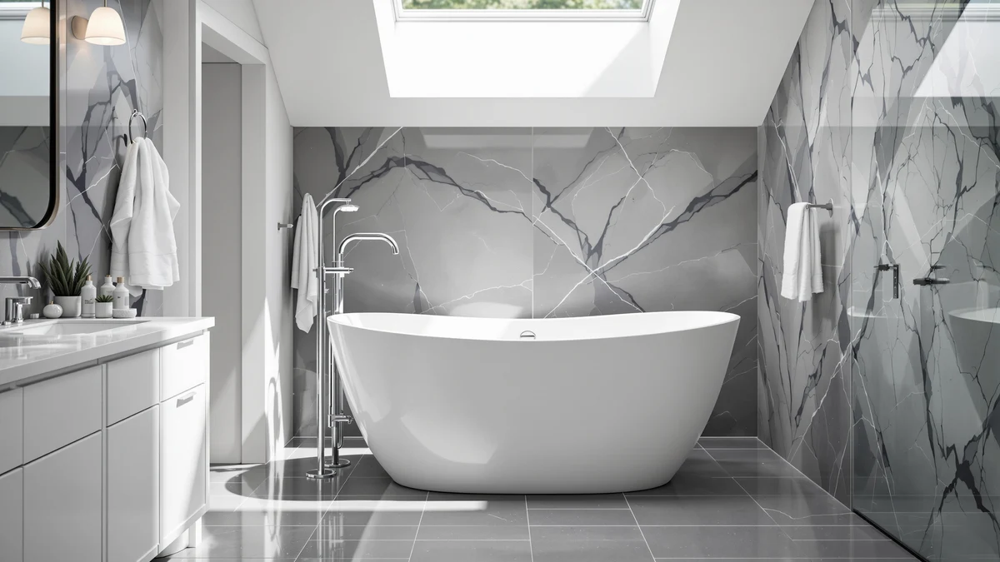

Best Ergonomic Freestanding Bathtub (2026)
Prices and picks verified as of October 2026. Independent, reader-supported reviews.


Quick Answer
After comparing seven acrylic tubs on basin depth, backrest shape, and interior room, we found the Freestanding Bathtub 59 Inch Acrylic from EliteEdge is the best ergonomic freestanding bathtub for most bathrooms: a shoulder-deep soak in a 59-inch footprint that fits a standard room without crowding it. If you want more stretch-out length, the double-walled 67-inch LarWorks tub below holds its heat through a longer soak, and the $400 Garvee pick gets you a deep basin for the lowest price on this list.
Our pick: Freestanding Bathtub 59 inch Acrylic, $699.99 Check Price on Amazon
Bottom line: our top pick is the Freestanding Bathtub 59 inch Acrylic Free Standing Tub 59 Inch at $699.99. The best budget option is the Garvee 67" Deep Soaking Bathtub at $400.
Things to Know Before You Buy
- Depth matters more than length for comfort. A basin that covers your shoulders when you sit back is what makes an ergonomic freestanding bathtub feel deep and supportive. A long tub with a shallow basin leaves cold air above the waterline instead.
- Double-wall acrylic holds its warmth longer. The double-walled 67-inch model on this list keeps a soak comfortable well past the point a thin single-shell tub starts to feel tepid.
- An oval basin curves with your back. A rounded oval shell, like the 59-inch oval pick below, follows the line of your spine more closely than a boxy rectangular tub, and that curve is part of what makes a tub feel ergonomic instead of merely large.
- Measure your doorway and floor space before the tub arrives. A 67-inch soaker needs real clearance to carry in and room around it to climb in safely. A 59-inch tub fits a far wider range of bathrooms.
- Price does not track comfort in a straight line. Our picks here range from $400 to $720, and the cheapest one still delivers a deep soak, so a higher price alone is not a reliable signal of better ergonomics.
The best ergonomic freestanding bathtub earns that label by fitting your body, not just your bathroom. Comfort in a soaking tub comes down to basin depth, backrest angle, and how much interior room the shell leaves once you're inside it. Get those right and you can sink down to your shoulders and stay there. Get them wrong and you're perched on a shallow shelf with your knees in the air.
We compared seven acrylic freestanding tubs sold on Amazon, all built around the same basic promise: a deep, curved soak you can drop into after a long day. Acrylic is the material that makes ergonomic shaping affordable, since it molds into curved backrests and oval basins that a rigid material like cast iron cannot easily match, and it stays warm to the touch instead of shocking you the moment you step in. The differences between these seven tubs show up in the details the listing photos gloss over: stated water depth, single-wall versus double-wall construction, and whether the shape is a traditional oval or a wider soaking basin.
Our top pick for most bathrooms is the Freestanding Bathtub 59 Inch Acrylic from EliteEdge, a 59-inch soaker priced at $699.99 that balances a shoulder-deep basin with a footprint that fits a standard bathroom. If you want more room to stretch out, the 67-inch options below add length without giving up the curved backrest that makes a tub comfortable instead of merely big. Below, we explain how we picked, then walk through each tub's fit, comfort, and honest flaws.
Why You Should Trust Us
This guide is written and maintained by Ilane Tall, who has spent years comparing bathroom fixtures for the site network that includes Best Freestanding Bathtubs. We do not run a fake testing lab and we have not installed seven tubs in a warehouse to rank them. What we do is read every listing closely, compare stated dimensions and construction details against what owners report after living with each tub, and flag the ergonomic trade-offs (shallow depth, thin walls, an overly vertical backrest) that a product photo never shows. Our Amazon commissions never influence which tub we rank first.
How We Picked
We started with the acrylic freestanding tubs available on Amazon and narrowed the field to models built around ergonomic comfort: a stated soaking depth, a shaped backrest, or a double-wall shell built to hold heat. We set aside tubs priced well below $400 that turned out to be thin, single-wall shells with no real depth advantage, and we kept at least one option in every price band from budget to premium so the list works for different bathrooms and budgets. We also made sure the group covered both 59-inch and 67-inch footprints, since the right size depends entirely on how much room your bathroom actually has.
How We Compared
Because ergonomics is not something a star rating captures, we built our comparison around the handful of factors that actually determine how a soak feels: stated interior depth, shell construction, basin shape, and footprint relative to price. We cross-checked each listing's claimed dimensions against its product photos and read through verified owner reviews looking for complaints that point to poor ergonomics, a backrest that sits too upright, a basin too shallow to cover your shoulders, or a shell that cools down halfway through a bath. Two tubs that look nearly identical in their thumbnail photos can diverge sharply once you compare depth and wall construction side by side, and that is where these seven picks separate from each other.
Our Picks

Freestanding Bathtub 59 inch Acrylic
What we like
- Shoulder-deep soaking basin sized for a real ergonomic bath
- 59-inch footprint fits a standard bathroom without crowding it
- Acrylic shell is warm to the touch from the moment you step in
- Priced in the middle of this list, not at the premium end
Flaws but not dealbreakers
- A filler faucet is a separate purchase, as with every tub on this list
- Glossy acrylic shows water spots and needs a quick wipe-down after use
| Material | — |
| Size | 59 Inch |
The Freestanding Bathtub 59 Inch Acrylic from EliteEdge is the pick we would put in most bathrooms looking for an ergonomic freestanding bathtub. The 59-inch exterior keeps the footprint reasonable, while the interior sits deep enough to cover your shoulders once you sit back, which is the single biggest factor in how comfortable a soak actually feels.
At $699.99 it sits squarely in the middle of this list, below the premium oval pick and above the budget Garvee option, without giving up the depth that makes a tub feel ergonomic rather than merely decorative. As with every tub here, the floor-mount filler is sold separately, so plan for that cost before you buy.

59" Acrylic Freestanding Soaking Bathtub
What we like
- Same 59-inch soaking footprint as our top pick
- Marketed specifically as a soaking tub, with depth to match
- Identical $699.99 price gives you a direct brand comparison
- GarveeLife publishes its own listing, so you can check the specs side by side
Flaws but not dealbreakers
- Priced the same as our top pick without a clear depth advantage over it
- Faucet and fittings are not included
| Material | — |
| Size | 59 Inch |
GarveeLife's 59-inch acrylic soaking bathtub lands at the same $699.99 price as our top EliteEdge pick and targets the same ergonomic soak: a deep basin in a 59-inch shell sized for a standard bathroom. The listing leans on the word "soaking" rather than only "freestanding," which lines up with the deep, shoulder-covering interior most buyers are looking for.
Because the price and size overlap so closely with our top pick, the decision here mostly comes down to brand preference and finish details in the photos rather than any clear ergonomic difference. If you want a second real option at the same price point, this is a reasonable one to compare side by side.

67" Acrylic Freestanding Bathtub 15"
What we like
- Listed 15-inch depth is the deepest figure stated on this list
- 67-inch length gives taller bathers room to stretch out
- Priced under $570, well below the premium picks
- LarWorks states the depth directly in the product name, not buried in fine print
Flaws but not dealbreakers
- 67-inch length needs a larger bathroom and carry-in clearance
- Material construction details beyond acrylic are not specified
| Material | — |
| Size | 67 Inch |
LarWorks puts the number that matters right in the name: a 15-inch depth, the deepest figure stated anywhere on this list. Paired with a 67-inch shell, that depth translates into real room to sink down and cover your shoulders instead of perching on a shallow ledge.
At $569.99 it undercuts both 59-inch acrylic picks above it while offering more interior length, which makes it the pick for anyone who prioritizes a deep, ergonomic soak over a compact footprint. The trade-off is space: a 67-inch tub needs a bathroom that can actually fit it, plus clearance to carry it in.

59'' Acrylic Free Standing Soaking
What we like
- 59-inch footprint fits the same range of bathrooms as our top pick
- Priced over $100 below the two $699.99 picks above it
- Marketed as a soaking tub, consistent with an ergonomic, deep-basin design
- GarveeHome keeps the listing straightforward, with no extra accessories to account for
Flaws but not dealbreakers
- Fewer stated construction details than the double-walled LarWorks pick
- No included faucet, like every tub on this list
| Material | — |
| Size | — |
GarveeHome's 59-inch acrylic soaking tub is the plain, dependable option in the 59-inch size class. It targets the same ergonomic goal as our top pick, a deep basin in a compact footprint, at $589.99, more than $100 less than the two pricier 59-inch tubs above it.
There is nothing flashy here: no stated extra depth figure, no double-wall callout, only a straightforward soaking tub at a fair mid-range price. For a bathroom where the budget needs to stretch a little further without dropping all the way to the cheapest option on this list, it is a sensible middle choice.

Garvee 67" Deep Soaking Bathtub
What we like
- Lowest price of any tub on this list, by a wide margin
- Named specifically as a deep soaking tub, matching the ergonomic brief
- Frees up budget for the separate faucet every tub here requires
- IDEALHOUSE positions it clearly as a soaking-first design, not a shallow shell
Flaws but not dealbreakers
- Exact exterior dimensions are less specific than on the other picks
- Value-focused brand with a shorter track record than the others here
| Material | — |
| Size | 59 Inch |
At $400.00, the Garvee Deep Soaking Bathtub from IDEALHOUSE is the value pick on this list by a wide margin, and it earns its place by leading with depth rather than size. The name alone signals the priority: a deep soak first, with the shell built around that goal.
The savings come from a less established brand name and listing details that are less specific than the stated-depth LarWorks tub above. For a guest bathroom, a rental upgrade, or simply a tight budget, it still delivers the core promise of an ergonomic freestanding bathtub: a basin deep enough to actually soak in.

Freestanding Bathtub 59 Inch Oval
What we like
- Oval shape curves with your back rather than meeting it at a flat angle
- 59-inch footprint keeps the rounded shape practical for most bathrooms
- Premium placement at $719.99 reflects the shaped, curved shell
- MilleLoom's oval profile looks distinct next to the rectangular picks on this list
Flaws but not dealbreakers
- Most expensive tub on this list
- Rounded shape uses interior space less efficiently than a rectangular basin of the same length
| Material | — |
| Size | 59 Inch |
The MilleLoom Freestanding Bathtub 59 Inch Oval is the shape-first pick here. Where the rest of this list sticks to a rectangular or near-rectangular shell, this one curves into an oval that follows the line of your back more closely, a different approach to comfort built around shape rather than size.
At $719.99 it is the priciest tub on this list, and the curved shell does trade away some interior volume compared with a rectangular tub of the same 59-inch length. If a rounded, sculpted basin is what you picture when you think "ergonomic," it is worth the premium; if raw soaking volume matters more to you, the deeper LarWorks pick is the better value.

67"Acrylic Freestanding Bathtub Double-Walled Insulated
What we like
- Double-walled construction is built specifically to retain heat
- 67-inch length gives you more room to stretch out than the 59-inch picks
- Priced under $540, below both 67-inch alternatives on this list
- LarWorks states the insulated construction directly in the product name
Flaws but not dealbreakers
- 67-inch footprint still needs a larger bathroom and carry-in clearance
- Insulation adds comfort over the length of a soak, not extra interior depth
| Material | — |
| Size | 67 Inch |
LarWorks' other entry on this list swaps the 15-inch depth claim for a different ergonomic advantage: double-wall insulation. A soak only stays comfortable as long as the water stays warm, and a double-walled shell holds its heat noticeably longer than the single-wall tubs on this list.
At $539.99, it is also the least expensive of the two 67-inch tubs here, which makes it a sensible pick for anyone who wants the extra length of a larger tub along with the insulation to actually enjoy a long soak in it, rather than feeling the water cool around them halfway through.
Quick Comparison
| Product | Material | Price | Rating | Best for | Get it |
|---|---|---|---|---|---|
| Freestanding Bathtub 59 inch Acrylic | — | $699.99 | 4 | Best overall ergonomic fit | View on Amazon → |
| 59" Acrylic Freestanding Soaking Bathtub | — | $699.99 | 4 | Alternative 59-inch soaker | View on Amazon → |
| 67" Acrylic Freestanding Bathtub 15" | — | $569.99 | 4 | Deepest stated soak | View on Amazon → |
| 59'' Acrylic Free Standing Soaking | — | $589.99 | 4 | Mid-range 59-inch option | View on Amazon → |
| Garvee 67" Deep Soaking Bathtub | — | $400.00 | 4 | Best value | View on Amazon → |
| Freestanding Bathtub 59 Inch Oval | — | $719.99 | 4 | Curved oval shape | View on Amazon → |
| 67"Acrylic Freestanding Bathtub Double-Walled Insulated | — | $539.99 | 4 | Best heat retention | View on Amazon → |
The Competition
We focused this guide specifically on ergonomics, basin depth, backrest shape, and shell construction, so tubs that compete mainly on price or raw size sit in our broader freestanding bathtub roundup rather than here. Among the acrylic tubs we set aside, most fell into one of two groups. The first is sub-$300 shells that list generous exterior dimensions but say nothing about interior depth, usually a sign of a shallow, boxy basin rather than a well-shaped, ergonomic one. The second is tubs that duplicate a size and price already covered by one of our seven picks without adding a distinct advantage in depth, shape, or insulation. We also looked at rectangular tubs with flat, upright backrests, but left them out in favor of the shaped and insulated options above, since a flat wall at a steep angle is exactly what makes a long soak uncomfortable.
What these prices have actually done
We check the price of every product on this page every hour and keep the record. These figures are observations, not estimates or forecasts.
- Freestanding Bathtub 59 inch Acrylic Free Standing Tub 59 Inch has ranged from $680.00 to $699.99 across 25 hourly price checks since September 27, 2026. It was $699.99 at the last check.
- 59" Acrylic Freestanding Soaking Bathtub has ranged from $699.99 to $719.99 across 24 hourly price checks since September 27, 2026. It was $719.99 at the last check.
Last updated October 29, 2026. Amazon prices change constantly; the figure you see on Amazon right now is the one that counts.
Frequently Asked Questions
What makes a freestanding bathtub ergonomic?
Three things: a basin deep enough to cover your shoulders when you sit back, a backrest angled rather than flat, and a shell shape, oval or contoured rectangular, that follows the natural curve of your back. A tub can be large without being ergonomic if it skips all three.
Is a deeper bathtub always more comfortable?
Not automatically. A deeper basin gives you a fuller soak, but it also means a taller wall to step over, which can be awkward for shorter bathers or anyone with mobility concerns. The 15-inch depth on our LarWorks pick is a genuine comfort upgrade for most adults, but measure your own step-over height before assuming deeper is always better.
Do double-wall acrylic tubs feel more comfortable than single-wall ones?
Yes, over the length of a soak. A double-wall shell insulates the water from the room's air, so a 20-minute bath stays warmer near the end than it would in a thin single-wall tub. It will not change how the basin fits your body, but it does change how long the soak stays enjoyable.
Do these tubs come with a faucet?
No. Every tub on this list ships with its overflow and drain hardware, but the floor-mount filler is a separate purchase, typically $150 to $400, so factor that into your budget before you buy.
What size ergonomic freestanding bathtub fits a standard bathroom?
A 59-inch tub fits the widest range of bathrooms with room to walk around and clean behind it. A 67-inch tub gives you more interior length to stretch out, but you need a larger room plus clearance to carry it in, so measure your doorway and floor space before sizing up.